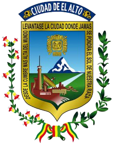

La ciudad de XXX, desde sus inicios, ha crecido de manera acelerada, lo que ha ocasionado un desorden e inmediatez en la ocupación de su territorio, razón por la cual, actualmente el Gobierno Autónomo Municipal de XXX se encuentra inmerso en una serie de dificultades que no permiten un adecuado desarrollo para solucionar sus actuales problemas y emergencias; y lograr una ciudad ordenada, moderna y que pueda recuperar su “Ajayu”, razón por la que se tiene la urgente necesidad de contar con un Plan de Ordenamiento Territorial de largo plazo para organizar acciones de manera efectiva, convergente y sistemática.
El objetivo del Plan de Ordenamiento Territorial (POT) es apoyar al XXX en sus esfuerzos por reducir los problemas de concentración de actividades (comercio informal) y tráfico vehicular, aumento constante de población y de la huella urbana, la irregularidad en los tejidos o tramas urbanas que generan una conexión móvil deficiente, contaminación del suelo y ríos, escasa disponibilidad de espacios verdes calificados y de una estructura ecológica, riesgos naturales, segregación socioespacial e inseguridad ciudadana y déficit en la cobertura de infraestructura, servicios básicos y equipamientos; mediante una planificación estratégica e integral, y el fortalecimiento de las capacidades de planificación y gestión urbana del XXX.
Estas acciones requerirán de continuidad y voluntad, no sólo por parte de la administración pública municipal, sino de la sociedad misma para construir y asegurar un gobierno eficaz y transparente; que satisfaga exigencias y expectativas urbanas, sociales, económicas, administrativas, financieras y políticas.
SEÑOR XXXXXVisualización de indicadores territoriales y urbanos.
Email institucional: contacto@municipio.gob.bo